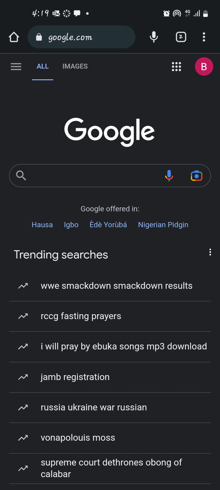

Contrast
Github
github.com
This Github dashboard page illustrates the principle of contrast in design very well. The background is a very dark colour and the contents are grouped in a lighter shade of gray, such that it is easy to see which elements on the page are related. The green highlighting also makes it easy to see, at a glance, which areaas of the page to interact with.
Proximity
Jumia
www.jumia.com.ng/phones-tablets/wwwwwwwwwwwwwwwwwwwwwwwwwwwwwwwwwww wwwwwwwwwwwwwwwwwwwwwwwwwwwwwwwwwwww wwwwwwwwwwwwwwwwwwwwwwwwwwwyyyyyyyyyyyyyyyyyyyyyyyyyyyyyyyyyywwwwwwwwwww WWWWWWWW
Whitespace

wwwwwwwwwwwwwwwwwwwwwwwwwwwwwww wwwwwwwwwwwwwwwwwwwwwwwwwwww WWWWWWWWWWWWWWWWWWWWeeeeeeeeeeeeeeeeeeeeeeeeeeeeeeeeeeeeeeeeeeeeeeeeeeWWWWWW